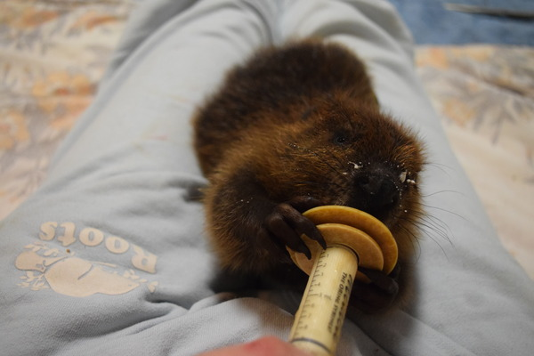

I like rodents because they come in many shapes and sizes, like to snack on different things, and have a variety of specialized skills
Beavers have webbed feet and leathery tails
North American Beaver
Squirrels are fast and use there tails as blankets when they sleep
Squirrels in Canada

Porcupines make nice noises and can climb up high
North American Porcupine

Groundhogs are sweet and snuggly and dig as well as climb
Groundhog